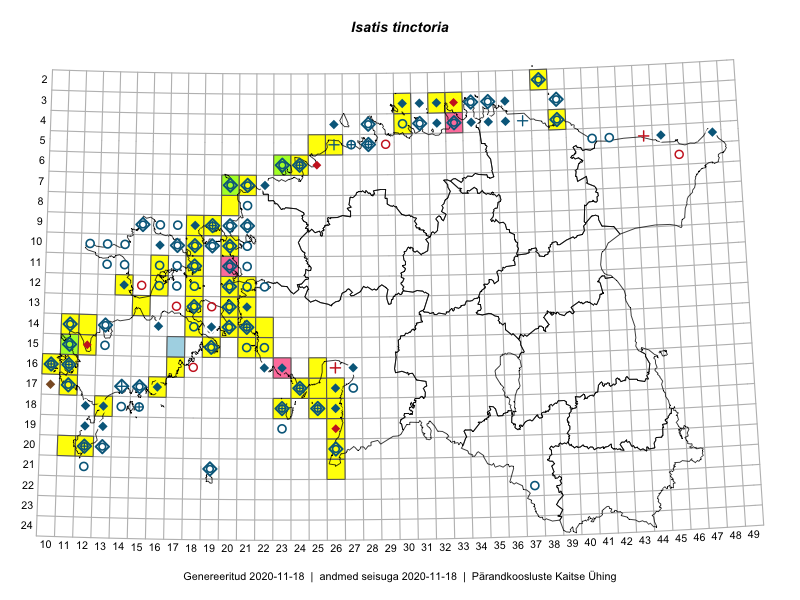

Isatis tinctoria
Uuendatud: 2016-12-01
Kaardile koondatud taksonid: Isatis tinctoria L.

Kaart põhineb 50 kirjel.
Kuvatud viited 20 esimesele andmebaasikirjele, ülejäänud PlutoFis
- Peedu Saar, Liina Oja: 2015-05-21: 16-25: ala
- Toomas Kukk, Eerik Leibak: 2015-08-10: 13-15: ala
- Rein Kalamees, Kersti Püssa: 2015-09-06: 03-32: ala
- Ott Luuk: 2014-07-27: 12-20: GPS punkt
- Peedu Saar, Elle Roosaluste: 2015-07-12: 13-20: ala
- Peedu Saar: 2015-08-07: 16-10: ala
- Rein Kalamees, Kersti Püssa: 2015-06-07: 04-30: ala
- Toomas Kukk: 2014-06-21: 16-10: ala
- Rein Kalamees, Kersti Püssa: 2015-05-15: 03-33: ala
- Meeli Mesipuu, Kadri Tali: 2015-07-06: 16-17: ala
- Ott Luuk, Eerik Leibak, Liisa Rennel: 2015-05-20: 21-26: ala
- Ott Luuk, Eerik Leibak: 2015-05-21: 17-25: ala
- Eeva-Maria Jeletsky, Tarmo Niitla: 2015-06-17: 11-18: ala
- Eeva-Maria Jeletsky, Tarmo Niitla: 2015-06-21: 12-16: ala
- Erkki Otsman, Sergei Smirnov: 2015-05-29: 06-24: ala
- Mari Reitalu: 2015-05-22: 16-11: ala
- Mari Reitalu: 2014-05-14: 15-11: ala
- Rein Kalamees, Kersti Püssa: 2015-06-28: 13-21: ala
- Mari Reitalu, Triin Reitalu: 2015-05-08: 16-10: ala
- Meeli Mesipuu: 2015-06-21: 15-19: ala